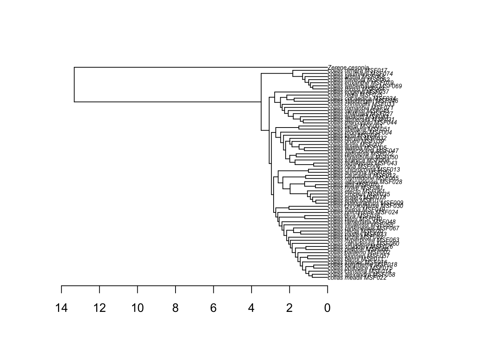
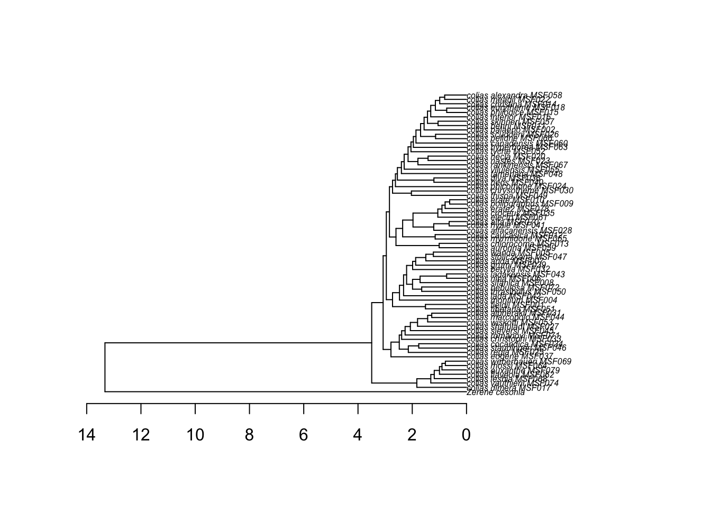
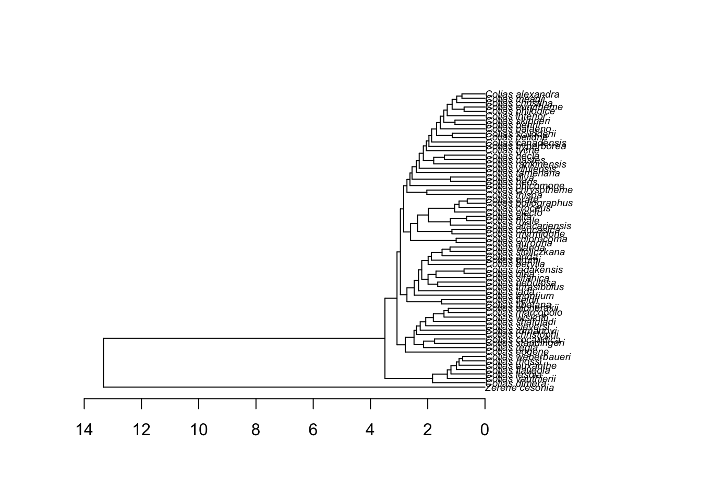
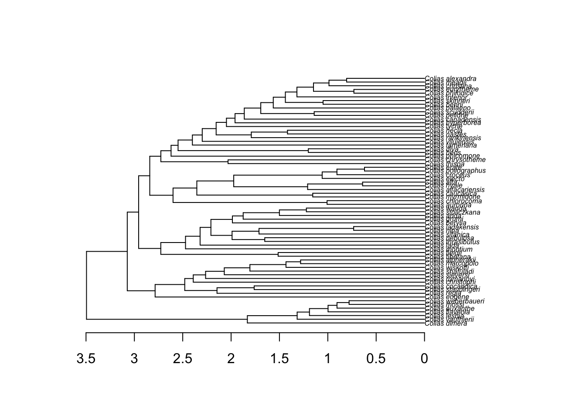
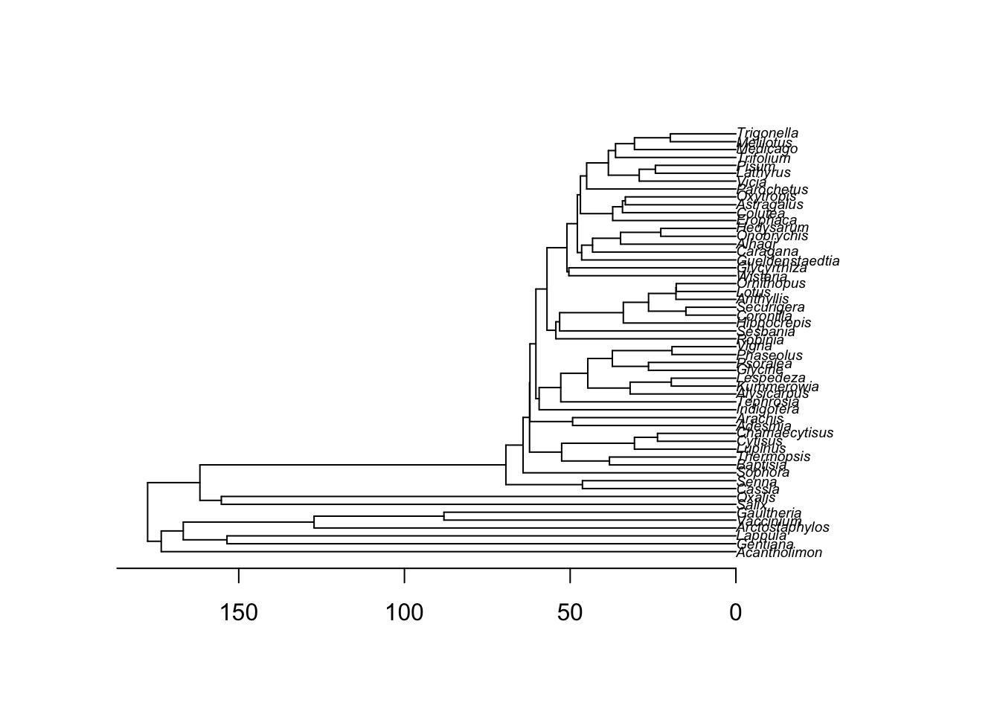
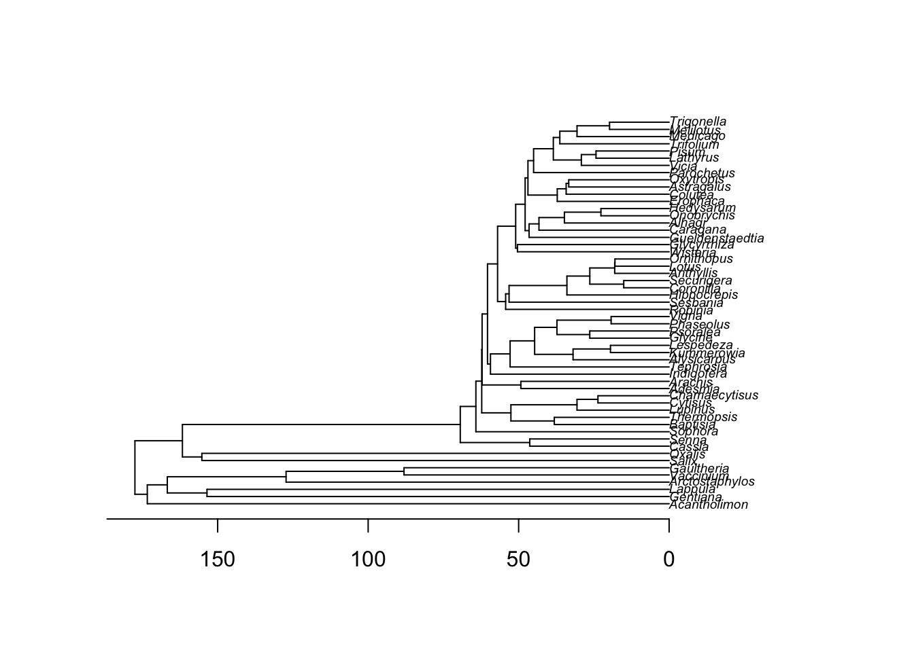

# devtools::install_github("maribraga/evolnets", build_vignettes = FALSE)
library(ape)
library(phytools)
library(evolnets)
library(tidyverse)
library(here)
library(readxl)
source(here("data_prepare/LadderizeTree.R"))Data for all analyses
Prepare Colias tree
# original tree
tree0 <- read.tree(here("data_prepare/data/original/Colias_time_tree_PAML.tre"))
is.binary(tree0)[1] TRUEis.rooted(tree0)[1] TRUEis.ultrametric(tree0)[1] FALSE# ultrametric tree - fix rounding errors
tree1 <- force.ultrametric(tree0)***************************************************************
* Note: *
* force.ultrametric does not include a formal method to *
* ultrametricize a tree & should only be used to coerce *
* a phylogeny that fails is.ultrametric due to rounding -- *
* not as a substitute for formal rate-smoothing methods. *
***************************************************************is.ultrametric(tree1)[1] TRUE# Scale branch lengths to million years
tree2 <- tree1
tree2$edge.length <- tree2$edge.length * 100
plot(tree2, cex = 0.5)
axisPhylo()
# Ladderize to make sure
tree3 <- LadderizeTree(tree2)
plot(tree3, cex = 0.5)
axisPhylo()
# Fix tip names
labels_tbl <- tibble(original = tree3$tip.label,
nocode = gsub("_MSF[[:digit:]]+","",original)) %>%
filter(!grepl("[[:digit:]]", nocode)) %>%
mutate(label = gsub("colias", "Colias", nocode))# Remove extra tips from same species
duplicates <- setdiff(tree3$tip.label, labels_tbl$original)
tree4 <- drop.tip(tree3, duplicates)
identical(tree4$tip.label, labels_tbl$original)[1] TRUEtree4$tip.label <- labels_tbl$label
plot(tree4, cex = 0.6)
axisPhylo()
#write.tree(tree4, here("data_prepare/data/processed/Colias_full_tree_clean_Z.tre"))Drop Zerene.
# Remove outgroup
tree5 <- drop.tip(tree4, "Zerene_cesonia")
plot(tree5, cex = 0.5)
axisPhylo()
#write.tree(tree5, here("data_prepare/data/processed/Colias_full_tree_clean.tre"))
# then add subroot branch (for RevBayes)Processed tree
tree_full <- read.tree(here("data_prepare/data/processed/Colias_full_tree_clean_Z.tre"))
tree_colias <- read.tree(here("data_prepare/data/processed/Colias_full_tree_clean.tre"))Data for historical biogeography analysis
Analysis WITH Zerene (outgroup)
Get the intersect between the tree and the distribution data
geo_data_full <- read.csv(here("data_prepare/data/original/Colias_distribution.csv"))
Ntip(tree_full)[1] 68n_distinct(geo_data_full$species)[1] 81spp_geo <- intersect(tree_full$tip.label, geo_data_full$species)
setdiff(tree_full$tip.label, geo_data_full$species)[1] "Colias_viluiensis"# one species missing distribution data
setdiff(geo_data_full$species, tree_full$tip.label) [1] "Zerene_eurydice" "Colias_aegidii" "Colias_adelaidae"
[4] "Colias_felderi" "Colias_erschoffi" "Colias_occidentalis"
[7] "Colias_sagartia" "Colias_aias" "Colias_harfordii"
[10] "Colias_leechi" "Colias_nilagiriensis" "Colias_marnoana"
[13] "Colias_ponteni" "Colias_dubia" # and 14 not in the tree (when including Zerene)Prune tree and distribution data to include only species in both
tree_geo <- drop.tip(tree_full, setdiff(tree_full$tip.label, spp_geo))
tree_geo
Phylogenetic tree with 67 tips and 66 internal nodes.
Tip labels:
Zerene_cesonia, Colias_dimera, Colias_vauthierii, Colias_lesbia, Colias_flaveola, Colias_euxanthe, ...
Rooted; includes branch lengths.geo_data <- filter(geo_data_full, species %in% spp_geo)Make nexus data file
geo_data_matrix <- geo_data %>%
mutate(Neotropics = case_when(range %in% c("Neotropical", "Americas") ~ 1, TRUE ~ 0),
Nearctic = case_when(range %in% c("Nearctic", "Nam Asia", "Arctic", "Americas") ~ 1, TRUE ~ 0),
PalearcticEast = case_when(range %in% c("Palearctic East", "East Asia", "Palearctic low",
"Nam Asia","Palearctic", "Arctic") ~ 1, TRUE ~ 0),
QTP = case_when(range %in% c("QTP", "East Asia", "West QTP", "Palearctic") ~ 1, TRUE ~ 0),
SEAsia = case_when(range %in% c("East Asia") ~ 1, TRUE ~ 0),
PalearcticWest = case_when(range %in% c("Palearctic West", "West QTP", "Palearctic low",
"Palearctic", "Arctic") ~ 1, TRUE ~ 0),
Africa = case_when(range == "African" ~ 1, TRUE ~ 0)) %>%
select(-range) %>%
column_to_rownames("species") %>%
as.matrix()
# reorder rows and columns - regions according to order in features
geo_data_matrix <- geo_data_matrix[tree_geo$tip.label,]
colnames(geo_data_matrix) <- c("NT","NA","EP","PTP","SA","WP","AF")
geo_data_matrix <- geo_data_matrix[,c("SA","EP","WP","NA","PTP","AF","NT")] Create file with color palette for plots
levels = c("Neotropical",
"Nearctic",
"Americas",
"N_American-Asian",
"Arctic",
"Palearctic_east",
"East_Asian",
"QTP",
"West_QTP",
"Palearctic",
"Palearctic_notQTP",
"Palearctic_west",
"African")
ranges <- c("A","B","AB","BC","BCF","C","CDE","E","EF","CEF","CF","F","G")
palette <- c("#FF8C01",
"#DA3541",
"darkred",
"#AA74A1",
"#6E4672",
"#00A2FF",
"#00D164",
"#F8C700",
"#097C65",
"#009F52",
"#347FD5",
"#013459",
"#EF9FBA")
colors_df <- tibble(names = levels, ranges = ranges, color = palette)Write out data for RevBayes
# write.tree(tree_geo, here("biogeography/with_zerene/data/tree_colias_geo.tre"))
# write.nexus.data(geo_data_matrix, here("biogeography/with_zerene/data/colias_geo.nex"), format = "standard")
#
# write.csv(geo_data, here("biogeography/with_zerene/data/colias_geo_tbl.csv"), row.names = FALSE)
# write.csv(geo_data_matrix, here("biogeography/with_zerene/data/colias_geo_mtx.csv"), row.names = TRUE)
# write.csv(colors_df, here("biogeography/with_zerene/data/colias_geo_palette.csv"), row.names = FALSE)
# Add subroot branch to tree - NOT NECESSARY
# tree_geo_string <- readLines(here("biogeography/with_zerene/data/tree_colias_geo.tre"))
# tree_geo_subroot_string <- sub(");$", "):0.01;", tree_geo_string)
# writeLines(tree_geo_subroot_string, here("biogeography/with_zerene/data/tree_colias_geo_subroot.tre"))Analysis WITHOUT Zerene (outgroup)
Get the intersect between the tree and the distribution data
geo_data_full <- read.csv(here("data_prepare/data/original/Colias_distribution.csv")) %>%
mutate(range = case_when(range == "QTP" ~ "PTH", range == "West QTP" ~ "West PTH", TRUE ~ range))
Ntip(tree_colias)[1] 67n_distinct(geo_data_full$species)[1] 81spp_geo <- intersect(tree_colias$tip.label, geo_data_full$species)
setdiff(tree_colias$tip.label, geo_data_full$species)[1] "Colias_viluiensis"# one species missing distribution data
setdiff(geo_data_full$species, tree_colias$tip.label) [1] "Zerene_cesonia" "Zerene_eurydice" "Colias_aegidii"
[4] "Colias_adelaidae" "Colias_felderi" "Colias_erschoffi"
[7] "Colias_occidentalis" "Colias_sagartia" "Colias_aias"
[10] "Colias_harfordii" "Colias_leechi" "Colias_nilagiriensis"
[13] "Colias_marnoana" "Colias_ponteni" "Colias_dubia" # and 14 not in the tree (when including Zerene)Prune tree and distribution data to include only species in both
tree_geo <- drop.tip(tree_colias, setdiff(tree_colias$tip.label, spp_geo))
tree_geo
Phylogenetic tree with 66 tips and 65 internal nodes.
Tip labels:
Colias_dimera, Colias_vauthierii, Colias_lesbia, Colias_flaveola, Colias_euxanthe, Colias_mossi, ...
Rooted; includes branch lengths.geo_data <- filter(geo_data_full, species %in% spp_geo)Make nexus data file
sort(unique(geo_data$range)) [1] "African" "Arctic" "East Asia" "Nam Asia"
[5] "Nearctic" "Neotropical" "Palearctic" "Palearctic East"
[9] "Palearctic low" "Palearctic West" "PTH" "West PTH" geo_data_matrix <- geo_data %>%
mutate(Neotropics = case_when(range == "Neotropical" ~ 1, TRUE ~ 0),
Nearctic = case_when(range %in% c("Nearctic", "Nam Asia", "Arctic") ~ 1, TRUE ~ 0),
PalearcticEast = case_when(range %in% c("Palearctic East", "East Asia", "Palearctic low",
"Nam Asia","Palearctic", "Arctic") ~ 1, TRUE ~ 0),
PTH = case_when(range %in% c("PTH", "East Asia", "West PTH", "Palearctic") ~ 1, TRUE ~ 0),
SEAsia = case_when(range %in% c("East Asia") ~ 1, TRUE ~ 0),
PalearcticWest = case_when(range %in% c("Palearctic West", "West PTH", "Palearctic low",
"Palearctic", "Arctic") ~ 1, TRUE ~ 0),
Africa = case_when(range == "African" ~ 1, TRUE ~ 0)) %>%
select(-range) %>%
column_to_rownames("species") %>%
as.matrix()
# reorder rows and columns - regions according to order in features
geo_data_matrix <- geo_data_matrix[tree_geo$tip.label,]
colnames(geo_data_matrix) <- c("NTr","NAr","EPa","PTP","SEA","WPa","Afr")
geo_data_matrix <- geo_data_matrix[,c("SEA","EPa","WPa","NAr","PTP","Afr","NTr")] Create file with color palette for plots
levels = c("Neotropical",
"Nearctic",
"N_American-Asian",
"Arctic",
"Palearctic_east",
"East_Asian",
"PTH",
"West_PTH",
"Palearctic",
"Palearctic_notPTH",
"Palearctic_west",
"African")
ranges <- c("A","B","BC","BCF","C","CDE","E","EF","CEF","CF","F","G")
palette <- c("#FF8C01",
"#DA3541",
"#AA74A1",
"#6E4672",
"#00A2FF",
"#00D164",
"#F8C700",
"#097C65",
"#009F52",
"#347FD5",
"#013459",
"#EF9FBA")
colors_df <- tibble(names = levels, ranges = ranges, color = palette)Write out data for RevBayes
write.tree(tree_geo, here("biogeography/without_zerene/data/tree_colias_geo.tre"))
write.nexus.data(geo_data_matrix, here("biogeography/without_zerene/data/colias_geo.nex"), format = "standard")
write.csv(geo_data, here("biogeography/without_zerene/data/colias_geo_tbl.csv"), row.names = FALSE)
write.csv(geo_data_matrix, here("biogeography/without_zerene/data/colias_geo_mtx.csv"), row.names = TRUE)
write.csv(colors_df, here("biogeography/without_zerene/data/colias_geo_palette.csv"), row.names = FALSE)
# Add subroot branch to tree - NOT NECESSARY
# tree_geo_string <- readLines(here("biogeography/without_zerene/data/tree_colias_geo.tre"))
# tree_geo_subroot_string <- sub(");$", "):0.01;", tree_geo_string)
# writeLines(tree_geo_subroot_string, here("biogeography/without_zerene/data/tree_colias_geo_subroot.tre"))Data for host repertoire evolution analysis
host_data_full <- read.csv(here("data_prepare/data/original/colias_hosts_curated_191123.csv")) %>%
mutate(species = str_replace(species," ", "_"))
Ntip(tree_colias)[1] 67n_distinct(host_data_full$species)[1] 56spp_host <- intersect(tree_colias$tip.label, host_data_full$species)
# tips without host use data
setdiff(tree_colias$tip.label, host_data_full$species) [1] "Colias_regia" "Colias_staudingeri" "Colias_romanovi"
[4] "Colias_sieversi" "Colias_shafuladi" "Colias_tibetana"
[7] "Colias_montium" "Colias_lada" "Colias_thrasibulus"
[10] "Colias_diva" "Colias_viluiensis" "Colias_rankinensis"# species with knows hosts but not in the tree
setdiff(host_data_full$species, tree_colias$tip.label)[1] "Zerene_cesonia"Prune tree and host data to include only species in both
tree_host <- drop.tip(tree_colias, setdiff(tree_colias$tip.label, spp_host))
tree_host
Phylogenetic tree with 55 tips and 54 internal nodes.
Tip labels:
Colias_dimera, Colias_vauthierii, Colias_lesbia, Colias_flaveola, Colias_euxanthe, Colias_mossi, ...
Rooted; includes branch lengths.host_data <- filter(host_data_full, species %in% spp_host)Prepare host plant genera tree
Read full species tree and taxonomic table from Janssens et al.
host_tree_spp_full <- read.tree(here("data_prepare/data/original/Angio_Janssens_dated_tree.phy"))
host_tax_data <- read.csv(here("data_prepare/data/original/Angio_Janssens_taxonomy.csv"))
# fix names
host_tree_spp_full$tip.label <- sub("WITHDASH", "-", host_tree_spp_full$tip.label)
host_genera <- unique(host_data$host_genus)
host_tax_data_colias <- host_tax_data %>%
distinct() %>% # remove duplicates
left_join(tibble(genus = host_genera, host = "host")) %>%
filter(!is.na(host))Match species names in the tree and taxonomic table. Then choose one species to represent the genus.
sort(setdiff(host_tax_data_colias$species, host_tree_spp_full$tip.label))character(0)# spp that are outside the monophyletic genus (looking at host_tree_spp in FigTree)
bad_spp <- c("Adesmia_exilis","Lespedeza_frutescens","Vigna_populnea","Trifolium_tomentosum","Lathyrus_saxatilis","Astragalus_vogelii","Astragalus_cysticalyx","Astragalus_complanatus","Astragalus_sinicus","Thermopsis_rhombifolia")
spp_to_keep_tax <- host_tax_data_colias %>%
filter(!species %in% bad_spp) %>%
group_by(genus) %>%
slice_head()
drop_spp <- setdiff(host_tree_spp_full$tip.label, spp_to_keep_tax$species)
host_tree <- drop.tip(host_tree_spp_full, drop_spp)
gen_tip_lab <- tibble(n = 1:Ntip(host_tree), tip_lab_spp = host_tree$tip.label) %>%
left_join(dplyr::select(spp_to_keep_tax, species, genus),
by = c("tip_lab_spp" = "species")) %>%
arrange(n) # to really make sure that it is in the correct order
host_tree$tip.label <- gen_tip_lab$genusMake sure the host tree is binary, rooted and ultrametric.
host_tree <- LadderizeTree(host_tree)
plot(host_tree, cex = 0.6)
axisPhylo()
is.binary(host_tree)[1] TRUEis.rooted(host_tree)[1] TRUEis.ultrametric(host_tree)[1] FALSEhost_tree <- force.ultrametric(host_tree)***************************************************************
* Note: *
* force.ultrametric does not include a formal method to *
* ultrametricize a tree & should only be used to coerce *
* a phylogeny that fails is.ultrametric due to rounding -- *
* not as a substitute for formal rate-smoothing methods. *
***************************************************************is.ultrametric(host_tree)[1] TRUEplot(host_tree, cex = 0.6)
axisPhylo()
Remove hosts that are not in the phylogenetic tree from interaction data
host_no_tree <- setdiff(host_genera, host_tree$tip.label)
host_data_phylos <- host_data %>%
filter(!(host_genus %in% host_no_tree))
n_distinct(host_data_phylos$species) == Ntip(tree_host)[1] TRUEMake interaction matrix from edge list
Including only plant genera in the phylogeny.
# the interaction matrix needs to be in the correct format for RevBayes
# edge list to matrix
matrix <- host_data_phylos %>%
select(-host_family) %>%
mutate(values = 2) %>%
pivot_wider(names_from = host_genus, values_from = values, values_fill = 0) %>%
column_to_rownames("species") %>%
as.matrix()
# check that all host are in the matrix
dim(matrix)[2] == n_distinct(host_data_phylos$host_genus)[1] TRUE# check that all butterflies have hosts
matrix[which(rowSums(matrix) == 0),] Astragalus Lupinus Thermopsis Vicia Lathyrus Medicago Oxytropis Trifolium
Hedysarum Lotus Hippocrepis Securigera Coronilla Onobrychis Salix
Vaccinium Gentiana Cytisus Chamaecytisus Lappula Anthyllis Colutea
Erophaca Melilotus Tephrosia Cassia Oxalis Phaseolus Robinia Sesbania
Indigofera Senna Alhagi Glycine Glycyrrhiza Lespedeza Sophora Parochetus
Alysicarpus Kummerowia Pisum Vigna Wisteria Arachis Baptisia Psoralea
Trigonella Gueldenstaedtia Arctostaphylos Caragana Ornithopus Gaultheria
Adesmia Acantholimon# order rows by tree and columns by host_tree
nrow(matrix) == Ntip(tree_host)[1] TRUEncol(matrix) == Ntip(host_tree)[1] TRUEmatrix_phylos <- matrix[tree_host$tip.label, host_tree$tip.label]Including all plant genera (for analysis without beta).
# the interaction matrix needs to be in the correct format for RevBayes
# edge list to matrix
matrix_all_hosts <- host_data %>%
select(-host_family) %>%
mutate(values = 2) %>%
pivot_wider(names_from = host_genus, values_from = values, values_fill = 0) %>%
column_to_rownames("species") %>%
as.matrix()
# check that all host are in the matrix
dim(matrix_all_hosts)[2] == n_distinct(host_data$host_genus)[1] TRUE# check that all butterflies have hosts
matrix_all_hosts[which(rowSums(matrix_all_hosts) == 0),] Astragalus Lupinus Thermopsis Vicia Lathyrus Medicago Oxytropis Trifolium
Hedysarum Lotus Dorycnopsis Hippocrepis Securigera Coronilla Onobrychis
Astracantha Salix Vaccinium Gentiana Cytisus Chamaecytisus Lappula
Acanthyllis Anthyllis Colutea Erophaca Melilotus Tephrosia Tripodion
Cassia Oxalis Phaseolus Robinia Sesbania Indigofera Senna Alhagi Glycine
Glycyrrhiza Lespedeza Sophora Parochetus Alysicarpus Kummerowia Pisum
Vigna Wisteria Arachis Baptisia Psoralea Syrmatium Acmispon Hosackia
Ottleya Trigonella Gueldenstaedtia Arctostaphylos Caragana Ornithopus
Gaultheria Adesmia Acantholimon# order rows by tree and columns by plant families
nrow(matrix_all_hosts) == Ntip(tree_host)[1] TRUEhost_order <- host_data %>%
arrange(host_family) %>%
pull(host_genus) %>%
unique()
matrix_all_hosts <- matrix_all_hosts[tree_host$tip.label, host_order]Write out data for RevBayes
write.tree(tree_host, here("host_repertoire/data/colias_tree_host.tre"))
write.tree(host_tree, here("host_repertoire/data/host_tree.tre"))
write.nexus.data(matrix_phylos, here("host_repertoire/data/interaction_matrix.nex"), format = "standard")
# Add subroot branch to tree
tree_host_string <- readLines(here("host_repertoire/data/colias_tree_host.tre"))
tree_host_subroot_string <- sub(");$", "):0.01;", tree_host_string)
writeLines(tree_host_subroot_string, here("host_repertoire/data/colias_tree_host_subroot.tre"))
# interaction data for butterflies and plant genera on phylogenies
write.csv(host_data_phylos, here("host_repertoire/data/colias_host_tbl_phylos.csv"), row.names = FALSE)
write.csv(matrix_phylos, here("host_repertoire/data/interaction_matrix_phylos.csv"))
# interaction data for butterflies on phylogeny and all hosts
write.nexus.data(matrix_all_hosts, here("host_repertoire/data/interaction_matrix_all_hosts.nex"), format = "standard")
write.csv(host_data, here("host_repertoire/data/colias_host_tbl_all_hosts.csv"), row.names = FALSE)
write.csv(matrix_all_hosts, here("host_repertoire/data/interaction_matrix_all_hosts.csv"))